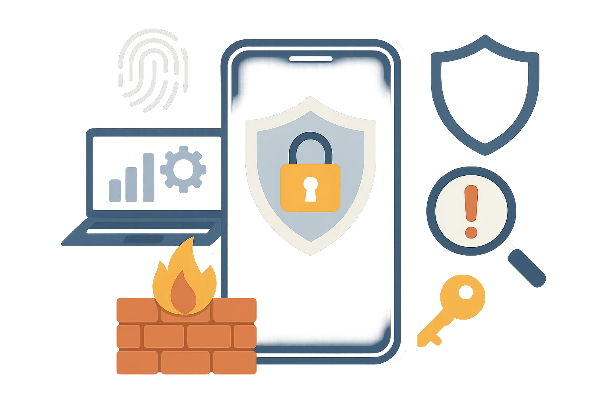
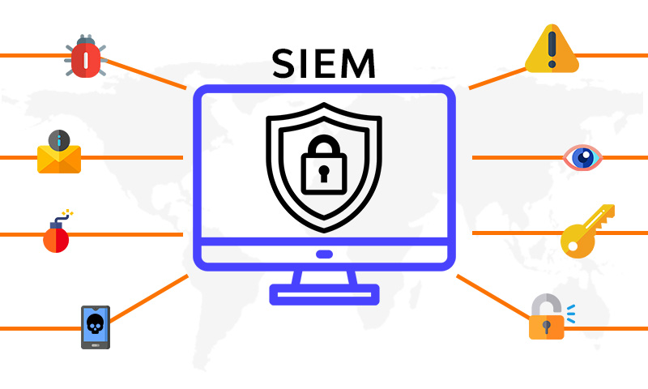
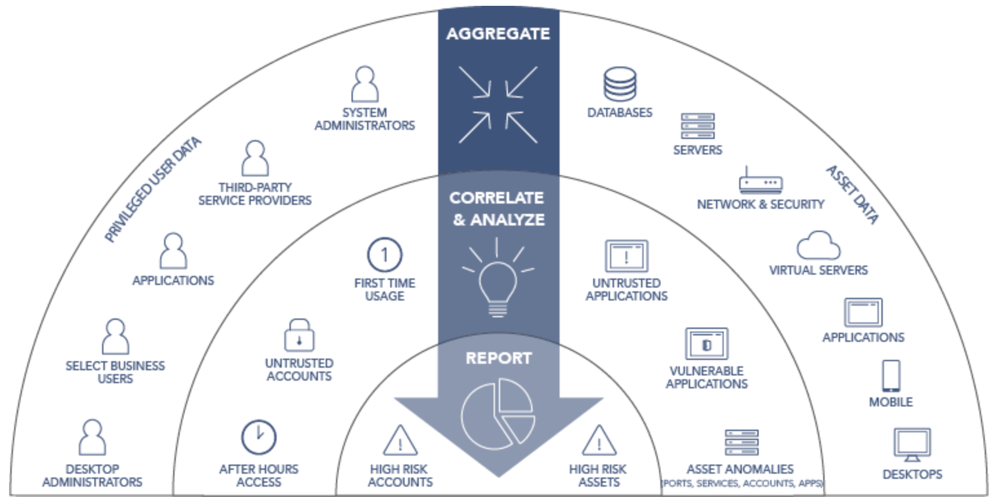
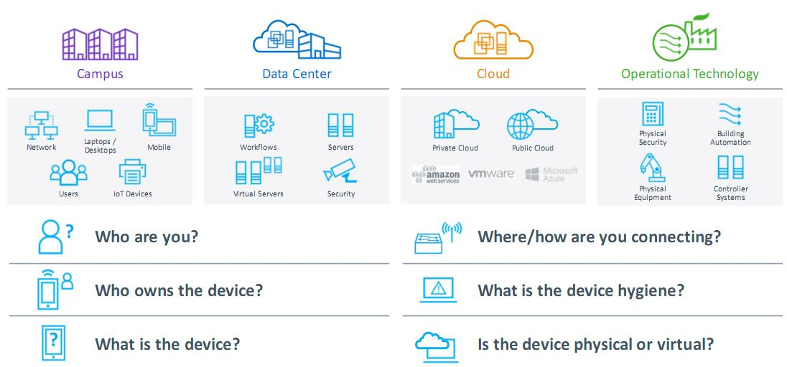
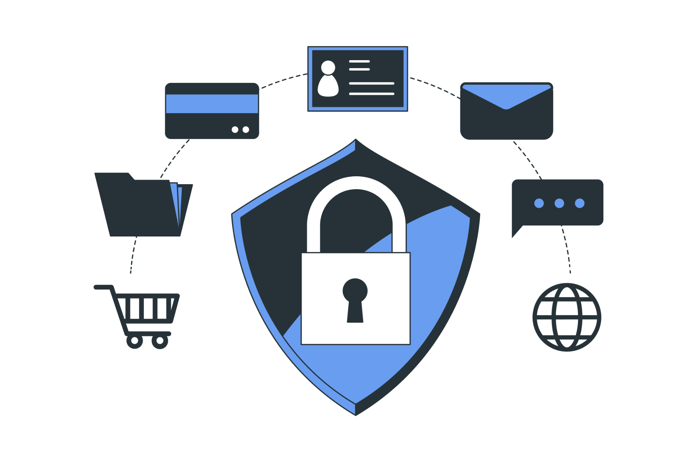
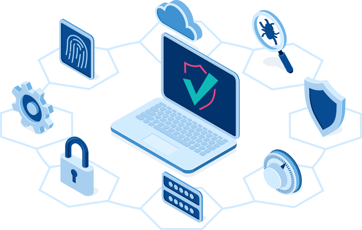
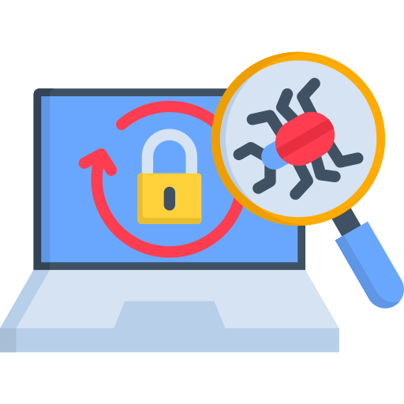

Protect your organization with comprehensive security solutions designed to detect, prevent, and respond to evolving cyber threats.

Managed Security is a comprehensive approach to protecting an organization's IT infrastructure, systems, applications, and data through continuous monitoring, threat detection, and security management. It combines people, processes, and technology to identify risks, prevent cyber threats, and maintain a secure operating environment.
As organizations increasingly depend on digital technologies, cyber threats continue to grow in volume and sophistication. Managed Security helps businesses strengthen their security posture by implementing multiple layers of protection across networks, endpoints, applications, and cloud environments.
By leveraging proactive monitoring, security controls, and incident response capabilities, organizations can reduce risks, improve compliance, and ensure the confidentiality, integrity, and availability of critical business information.
Continuously monitor networks, systems, and applications to identify suspicious activities and security threats in real time.
Protect critical assets through proactive security controls, incident response, and risk mitigation strategies.
Gain centralized visibility into security events while supporting governance, compliance, and reporting requirements.
Modern organizations face a constantly evolving threat landscape that includes malware, ransomware, phishing attacks, unauthorized access, and data breaches. A successful cyberattack can lead to operational disruption, financial loss, and reputational damage.
Managed Security provides ongoing protection and expert oversight, helping organizations detect threats early, respond effectively to incidents, and maintain business continuity in an increasingly connected world.
Ready to Learn More?Explore how modern IT management solutions can help improve visibility, efficiency, and operational reliability across your organization.
Get In Touch
Security Information and Event Management (SIEM) is a cybersecurity solution that collects, analyzes, and correlates security data from various sources across an organization's IT environment. It provides a centralized view of security events, helping security teams detect threats, investigate incidents, and respond more effectively.
SIEM solutions gather logs and events from networks, servers, applications, endpoints, and cloud environments, transforming large volumes of security data into actionable insights. By correlating related activities and identifying unusual behavior, SIEM enables organizations to detect potential threats before they become major security incidents.
As cyber threats continue to evolve, SIEM plays a critical role in strengthening an organization's security posture by improving visibility, accelerating incident response, and supporting compliance and audit requirements.

Collect and analyze security events from multiple systems, applications, and devices through a single platform.
Identify suspicious activities and potential threats in real time to enable faster investigation and remediation.
Leverage advanced analytics, reporting, and audit capabilities to improve security management and compliance readiness.
Organizations generate thousands of security events every day across networks, applications, endpoints, and cloud services. Without centralized visibility, identifying genuine threats can be difficult and time-consuming. SIEM helps security teams focus on the most critical threats, prioritize response efforts, and protect business operations from increasingly sophisticated cyberattacks.
Ready to Learn More?Explore how modern IT management solutions can help improve visibility, efficiency, and operational reliability across your organization.
Get In Touch
Privileged Access Management (PAM) is a cybersecurity approach that helps organizations control, monitor, and secure access to critical systems, applications, and sensitive data. It focuses on managing privileged accounts and enforcing the principle of least privilege, ensuring users only have access to the resources necessary to perform their authorized tasks.
By limiting excessive permissions and monitoring privileged activities, PAM helps organizations reduce security risks, prevent unauthorized access, and strengthen overall security posture. It also provides greater visibility into privileged account usage, helping organizations detect suspicious behavior and respond to potential threats more effectively.
As organizations continue to adopt digital technologies and cloud services, PAM plays a critical role in protecting sensitive assets from both external cyberattacks and insider threats while supporting governance and compliance requirements.
Manage and secure privileged accounts, ensuring users have only the minimum level of access required to perform their responsibilities.
Track privileged activities across systems and applications to improve visibility, accountability, and security oversight.
Reduce the risk of unauthorized access while supporting regulatory compliance and security governance initiatives.
Organizations rely on privileged accounts to manage critical systems, applications, and infrastructure. If these accounts are compromised, they can provide attackers with extensive access to sensitive resources. Privileged Access Management helps protect these high-value accounts, reducing security risks while ensuring that access remains secure, controlled, and auditable.
Ready to Learn More?Explore how modern IT management solutions can help improve visibility, efficiency, and operational reliability across your organization.
Get In Touch
Network Access Control (NAC) is a security solution that enables organizations to identify, authenticate, and manage devices and users attempting to connect to the network. NAC helps enforce security policies by ensuring that only authorized and compliant devices are granted access to critical network resources.
By continuously monitoring connected devices, NAC provides visibility into the entire network environment, including endpoints, IoT devices, servers, and other connected assets. Non-compliant, unknown, or potentially risky devices can be restricted, quarantined, or blocked from accessing the network.
As organizations adopt more connected devices and distributed work environments, NAC plays a critical role in strengthening security, reducing cyber risks, and maintaining control over network access.
Automatically identify and classify devices connected to the network, providing complete visibility across IT, IoT, and operational technology environments.
.png)
Ensure that only authorized and compliant users and devices can access network resources based on defined security policies.
Detect non-compliant or suspicious devices and automatically apply access restrictions, quarantine actions, or remediation workflows.
Modern organizations rely on a growing number of users, devices, and connected systems. Without proper access controls, unauthorized or compromised devices can introduce significant security risks. NAC helps organizations maintain visibility, enforce security policies, and protect network resources by ensuring only trusted users and devices are granted access.
Ready to Learn More?Explore how modern IT management solutions can help improve visibility, efficiency, and operational reliability across your organization.
Get In TouchData Loss Prevention (DLP) is a security solution designed to identify, monitor, and protect sensitive information from unauthorized access, sharing, or loss. It helps organizations prevent confidential data from being accidentally or intentionally exposed through email, web applications, cloud services, endpoints, removable devices, or other communication channels.
DLP solutions provide visibility into where sensitive data resides, how it is being used, and who has access to it. By applying security policies and automated controls, organizations can reduce the risk of data breaches, maintain regulatory compliance, and protect valuable business information.
safeguarding data across on-premises, cloud, and remote work environments.
Identify and classify sensitive information across endpoints, servers, databases, cloud platforms, and business applications.
Prevent unauthorized sharing, transfer, or exposure of sensitive information through automated policies and security controls.
Manage data protection policies from a single platform while supporting regulatory compliance and governance requirements.
Organizations generate, store, and share large volumes of sensitive information every day. Without proper controls, confidential data can be exposed through emails, file transfers, cloud applications, or user actions. DLP helps organizations maintain control of their data, reduce security risks, and ensure that critical information remains protected wherever it is stored or used.
Ready to Learn More?Explore how modern IT management solutions can help improve visibility, efficiency, and operational reliability across your organization.
Get In Touch
Application Security refers to the practices, technologies, and controls used to protect applications from vulnerabilities, cyber threats, and unauthorized access throughout their lifecycle. It helps organizations identify security weaknesses, prevent attacks, and ensure that business applications remain secure, reliable, and available.
As applications become increasingly critical to business operations, they are frequently targeted by cybercriminals. Application Security helps protect web applications, APIs, mobile applications, and enterprise systems from threats such as malware, data breaches, bot attacks, and application vulnerabilities.
By implementing proactive security measures, organizations can reduce risk, improve compliance, and deliver secure digital experiences to users and customers.
Protect web applications and APIs against common cyber threats, vulnerabilities, and unauthorized access attempts.
Identify and address security weaknesses before they can be exploited by attackers.
Monitor application activity and security events in real time to detect suspicious behavior and respond quickly to threats.
Modern organizations rely heavily on web applications, APIs, and digital services to support customers and business operations. A vulnerable application can expose sensitive information, disrupt services, and damage business reputation. Application Security helps organizations proactively identify risks, defend against attacks, and maintain secure and reliable digital services.
Ready to Learn More?Explore how modern IT management solutions can help improve visibility, efficiency, and operational reliability across your organization.
Get In Touch
Endpoint Security is a cybersecurity solution designed to protect devices such as laptops, desktops, servers, smartphones, and tablets from cyber threats and unauthorized access. As endpoints serve as common entry points for attackers, securing these devices is essential to maintaining the overall security of an organization.
Modern endpoint security combines multiple layers of protection, including antivirus, anti-malware, firewall, intrusion prevention, web filtering, behavioral analysis, and threat detection. These capabilities work together to protect against both known and emerging threats while ensuring users can work securely from any location.
As remote work and mobile access continue to expand, endpoint security plays a critical role in safeguarding business operations, sensitive data, and organizational infrastructure.
Protect endpoints from malware, ransomware, phishing attacks, and other cyber threats through multiple layers of security.
Identify suspicious activities and security incidents in real time, enabling faster response and remediation.
Manage and monitor endpoint security policies, updates, and threats through a centralized platform.
Employees increasingly access business systems using laptops, mobile devices, and remote connections. Each endpoint represents a potential entry point for cyber threats. Endpoint Security helps organizations protect these devices, reduce risks, and maintain secure access to critical business resources regardless of where users work.
Ready to Learn More?Explore how modern IT management solutions can help improve visibility, efficiency, and operational reliability across your organization.
Get In Touch
Penetration Testing is a security assessment methodology used to identify and validate vulnerabilities within networks, applications, systems, and IT infrastructure. It simulates real-world cyberattacks in a controlled environment to evaluate security effectiveness and uncover weaknesses before malicious actors can exploit them.
By combining automated tools, manual testing techniques, and expert analysis, penetration testing helps organizations strengthen security controls, reduce cyber risks, and improve overall security posture.
Collect and analyze information about target systems, applications, and infrastructure to identify potential attack vectors and security risks.
Identify, validate, and exploit vulnerabilities in a controlled manner to understand their potential impact on business operations.
.png)
Provide detailed findings, risk ratings, and actionable recommendations to help organizations address identified security weaknesses.
Cyber threats continue to evolve, making it essential for organizations to proactively identify and address security weaknesses. Penetration Testing provides insight into how attackers might target business systems, helping organizations strengthen defenses, reduce risk, and improve their overall cybersecurity readiness.
Ready to Learn More?Explore how modern IT management solutions can help improve visibility, efficiency, and operational reliability across your organization.
Get In Touch